5. Interfaces graphiques avec VB.NET et VS.NET
Nous nous proposons ici de montrer comment construire des interfaces graphiques avec VB.NET. Nous voyons tout d'abord quelles sont les classes de base de la plate-forme .NET qui nous permettent de construire une interface graphique. Nous n'utilisons dans un premier temps aucun outil de génération automatique. Puis nous utiliserons Visual Studio.NET (VS.NET), un outil de développement de Microsoft facilitant le développement d'applications avec les langages .NET et notamment la construction d'interfaces graphiques. La version VS.NET utilisée est la version anglaise.
5.1. Les bases des interfaces graphiques
5.1.1. Une fenêtre simple
Considérons le code suivant :
' options
Option Strict On
Option Explicit On
' espaces de noms
Imports System
Imports System.Drawing
Imports System.Windows.Forms
' la classe formulaire
Public Class Form1
Inherits Form
' le constructeur
Public Sub New()
' titre de la fenêtre
Me.Text = "Mon premier formulaire"
' dimensions de la fenêtre
Me.Size = New System.Drawing.Size(300, 100)
End Sub
' fonction de test
Public Shared Sub Main(ByVal args() As String)
' on affiche le formulaire
Application.Run(New Form1)
End Sub
End Class
Le code précédent est compilé puis exécuté
L'exécution affiche la fenêtre suivante :

Une interface graphique dérive en général de la classe de base System.Windows.Forms.Form :
La classe de base Form définit une fenêtre de base avec des boutons de fermeture, agrandissement/réduction, une taille ajustable, ... et gère les événements sur ces objets graphiques. Ici nous spécialisons la classe de base en lui fixant un titre et ses largeur (300) et hauteur (100). Ceci est fait dans son constructeur :
Public Sub New()
' titre de la fenêtre
Me.Text = "Mon premier formulaire"
' dimensions de la fenêtre
Me.Size = New System.Drawing.Size(300, 100)
End Sub
Le titre de la fenêtre est fixée par la propriété Text et les dimensions par la propriété Size. Size est défini dans l'espace de noms System.Drawing et est une structure. La procédure Main lance l'application graphique de la façon suivante :
Application.Run(New Form1)
Un formulaire de type Form1 est créé et affiché, puis l'application se met à l'écoute des événements qui se produisent sur le formulaire (clics, déplacements de souris, ...) et fait exécuter ceux que le formulaire gère. Ici, notre formulaire ne gère pas d'autre événement que ceux gérés par la classe de base Form (clics sur boutons fermeture, agrandissement/réduction, changement de taille de la fenêtre, déplacement de la fenêtre, ...).
5.1.2. Un formulaire avec bouton
Ajoutons maintenant un bouton à notre fenêtre :
' options
Option Strict On
Option Explicit On
' espaces de noms
Imports System
Imports System.Drawing
Imports System.Windows.Forms
' la classe formulaire
Public Class Form1
Inherits Form
' attributs
Private cmdTest As Button
' le constructeur
Public Sub New()
' le titre
Me.Text = "Mon premier formulaire"
' les dimensions
Me.Size = New System.Drawing.Size(300, 100)
' un bouton
' création
Me.cmdTest = New Button
' position
cmdTest.Location = New System.Drawing.Point(110, 20)
' taille
cmdTest.Size = New System.Drawing.Size(80, 30)
' libellé
cmdTest.Text = "Test"
' gestionnaire d'évt
AddHandler cmdTest.Click, AddressOf cmdTest_Click
' ajout bouton au formulaire
Me.Controls.Add(cmdTest)
End Sub
' gestionnaire d'événement
Private Sub cmdTest_Click(ByVal sender As Object, ByVal evt As EventArgs)
' il y a eu un clic sur le bouton - on le dit
MessageBox.Show("Clic sur bouton", "Clic sur bouton", MessageBoxButtons.OK, MessageBoxIcon.Information)
End Sub
' fonction de test
Public Shared Sub Main(ByVal args() As String)
' on affiche le formulaire
Application.Run(New Form1)
End Sub
End Class
Nous avons rajouté au formulaire un bouton :
' un bouton
' création
Me.cmdTest = New Button
' position
cmdTest.Location = New System.Drawing.Point(110, 20)
' taille
cmdTest.Size = New System.Drawing.Size(80, 30)
' libellé
cmdTest.Text = "Test"
' gestionnaire d'évt
AddHandler cmdTest.Click, AddressOf cmdTest_Click
' ajout bouton au formulaire
Me.Controls.Add(cmdTest)
La propriété Location fixe les coordonnées (110,20) du point supérieur gauche du bouton à l'aide d'une structure Point. Les largeur et hauteur du bouton sont fixées à (80,30) à l'aide d'une structure Size. La propriété Text du bouton permet de fixer le libellé du bouton. La classe bouton possède un événement Click défini comme suit :
où EventHandler est fonction "déléguée" ayant la signature suivante :
Cela signifie que le gestionnaire de l'événement [Click] sur le bouton devra avoir la signature du délégué [EventHandler]. Ici, lors d'un clic sur le bouton cmdTest, la méthode cmdTest_Click sera appelée. Celle-ci est définie comme suit conformément au modèle EventHandler précédent :
' gestionnaire d'événement
Private Sub cmdTest_Click(ByVal sender As Object, ByVal evt As EventArgs)
' il y a eu un clic sur le bouton - on le dit
MessageBox.Show("Clic sur bouton", "Clic sur bouton", MessageBoxButtons.OK, MessageBoxIcon.Information)
End Sub
On se contente d'afficher un message :

La classe est compilée et exécutée :
dos>vbc /r:system.dll /r:system.drawing.dll /r:system.windows.forms.dll frm2.vb
Compilateur Microsoft (R) Visual Basic .NET version 7.10.3052.4
dos>frm2
La classe MessageBox sert à afficher des messages dans une fenêtre. Nous avons utilisé ici le constructeur
Overloads Public Shared Function Show(ByVal owner As IWin32Window,ByVal text As String,ByVal caption As String,ByVal buttons As MessageBoxButtons,ByVal icon As MessageBoxIcon) As DialogResult
text | le message à afficher |
caption | le titre de la fenêtre |
buttons | les boutons présents dans la fenêtre |
icon | l'icone présente dans la fenêtre |
Le paramètre buttons peut prendre ses valeurs parmi les constantes suivantes :
constante | boutons |
 | |
 | |
 | |
 | |
 | |
 |
Le paramètre icon peut prendre ses valeurs parmi les constantes suivantes :
 | idem Stop | ||
idem Warning |  | ||
idem Asterisk |  | ||
 | idem Hand | ||
 |
La méthode Show est une méthode statique qui rend un résultat de type System.Windows.Forms.DialogResult qui est une énumération :
public enum System.Windows.Forms.DialogResult
{
Abort = 0x00000003,
Cancel = 0x00000002,
Ignore = 0x00000005,
No = 0x00000007,
None = 0x00000000,
OK = 0x00000001,
Retry = 0x00000004,
Yes = 0x00000006,
}
Pour savoir sur quel bouton a appuyé l'utilisateur pour fermer la fenêtre de type MessageBox on écrira :
dim res as DialogResult=MessageBox.Show(..)
if res=DialogResult.Yes then
' il a appuyé sur le bouton oui
...
end if
5.2. Construire une interface graphique avec Visual Studio.NET
Nous reprenons certains des exemples vus précédemment en les construisant maintenant avec Visual Studio.NET.
5.2.1. Création initiale du projet
- Lancez VS.NET et prendre l'option Fichier/Nouveau/Projet

- donnez les caractéristiques de votre projet
 |
- sélectionnez le type de projet que vous voulez construire, ici un projet VB.NET (1)
- sélectionnez le type d'application que vous voulez construire, ici une application windows (2)
- indiquez dans quel dossier vous voulez placer le sous-dossier du projet (3)
- indiquez le nom du projet (4). Ce sera également le nom du dossier qui contiendra les fichiers du projet
- le nom de ce dossier est rappelé en (5)
- Un certain nombre de dossiers et de fichiers sont alors créés sous le dossier i4 :
sous-dossiers du dossier projet1  |
De ces fichiers, seul un est intéressant, le fichier form1.cs qui est le fichier source associé au formulaire créé par VS.NET. Nous y reviendrons.
5.2.2. Les fenêtre de l'interface de VS.NET
L'interface de VS.NET laisse maintenant apparaître certains éléments de notre projet i4 :
Nous avons une fenêtre de conception de l'interface graphique :
 |
En prenant des contrôles dans la barre d'outils (toolbox 2) et en les déposant sur la surface de la fenêtre (1), nous pouvons construire une interface graphique. Si nos amenons la souris sur la "toolbox" celle-ci s'agrandit et laisse apparaître un certain nombre de contrôles :

Pour l'instant, nous n'en utilisons aucun. Toujours sur l'écran de VS.NET, nous trouvons la fenêtre de l'explorateur de solutions "Explorer Solution" :

Dans un premier temps, nous ne nous servirons peu de cette fenêtre. Elle montre l'ensemble des fichiers formant le projet. Un seul d'entre-eux nous intéresse : le fichier source de notre programme, ici Form1.vb. En cliquant droit sur Form1.vb, on obtient un menu permettant d'accéder soit au code source de notre interface graphique (Afficher le code) soit à l'interface graphique elle-même (Concepteur de vues) :

On peut accèder à ces deux entités directement à partir de la fenêtre "Solution Explorer" :
 | 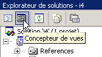 |
Les fenêtres ouvertes "s'accumulent" dans la fenêtre principale de conception :
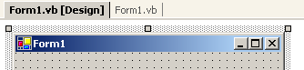
Ici Form1.vb[Design] désigne la fenêtre de conception et Form1.vb la fenêtre de code. Il suffit de cliquer sur l'un des onglets pour passer d'une fenêtre à l'autre. Une autre fenêtre importante présente sur l'écran de VS.NET est la fenêtre des propriétés :

Les propriétés exposées dans la fenêtre sont celles du contrôle actuellement sélectionné dans la fenêtre de conception graphique. On a accès à différentes fenêtres du projet avec le menu Affichage :

On y retrouve les fenêtres principales qui viennent d'être décrites ainsi que leurs raccourcis clavier.
5.2.3. Exécution d'un projet
Alors même que nous n'avons écrit aucun code, nous avons un projet exécutable. Faites F5 ou Déboguer/Démarrer pour l'exécuter. Nous obtenons la fenêtre suivante :

Cette fenêtre peut être agrandie, mise en icône, redimensionnée et fermée.
5.2.4. Le code généré par VS.NET
Regardons le code (Affichage/Code) de notre application :
Public Class Form1
Inherits System.Windows.Forms.Form
#Region " Code généré par le Concepteur Windows Form "
Public Sub New()
MyBase.New()
'Cet appel est requis par le Concepteur Windows Form.
InitializeComponent()
'Ajoutez une initialisation quelconque après l'appel InitializeComponent()
End Sub
'La méthode substituée Dispose du formulaire pour nettoyer la liste des composants.
Protected Overloads Overrides Sub Dispose(ByVal disposing As Boolean)
If disposing Then
If Not (components Is Nothing) Then
components.Dispose()
End If
End If
MyBase.Dispose(disposing)
End Sub
'Requis par le Concepteur Windows Form
Private components As System.ComponentModel.IContainer
'REMARQUE : la procédure suivante est requise par le Concepteur Windows Form
'Elle peut être modifiée en utilisant le Concepteur Windows Form.
'Ne la modifiez pas en utilisant l'éditeur de code.
<System.Diagnostics.DebuggerStepThrough()> Private Sub InitializeComponent()
components = New System.ComponentModel.Container()
Me.Text = "Form2"
End Sub
#End Region
End Class
Une interface graphique dérive de la classe de base System.Windows.Forms.Form :
La classe de base Form définit une fenêtre de base avec des boutons de fermeture, agrandissement/réduction, une taille ajustable, ... et gère les événements sur ces objets graphiques. Le constructeur du formulaire utilise une méthode InitializeComponent dans laquelle les contrôles du formulaires sont créés et initialisés.
Public Sub New()
MyBase.New()
'Cet appel est requis par le Concepteur Windows Form.
InitializeComponent()
'Ajoutez une initialisation quelconque après l'appel InitializeComponent()
End Sub
Tout autre travail à faire dans le constructeur peut être fait après l'appel à InitializeComponent. La méthode InitializeComponent
Private Sub InitializeComponent()
'
'Form1
'
Me.AutoScaleBaseSize = New System.Drawing.Size(5, 13)
Me.ClientSize = New System.Drawing.Size(292, 53)
Me.Name = "Form1"
Me.Text = "Form1"
End Sub
fixe le titre de la fenêtre "Form1", sa largeur (292) et sa hauteur (53). Le titre de la fenêtre est fixée par la propriété Text et les dimensions par la propriété Size. Size est défini dans l'espace de noms System.Drawing et est une structure. Pour exécuter cette application, il nous faut définir le module principal du projet. Pou cela, nous utilisons l'option [Projets/Propriétés] :

Dans [Objet de démarrage], nous indiquons [Form1] qui est le formulaire que nous venons de créer. Pour lancer l'exécution, nous utilisons l'option [Déboguer/Démarrer] :

5.2.5. Compilation dans une fenêtre dos
Maintenant, essayons de compiler et exécuter cette application dans une fenêtre dos :
dos>dir form1.vb
14/03/2004 11:53 514 Form1.vb
dos>vbc /r:system.dll /r:system.windows.forms.dll form1.vb
vbc : error BC30420: 'Sub Main' est introuvable dans 'Form1'.
Le compilateur indique qu'il ne trouve pas la procédure [Main]. En effet, VS.NET ne l'a pas générée. Nous l'avons cependant déjà rencontrée dans les exemples précédents. Elle a la forme suivante :
Shared Sub Main()
' on lance l'appli
Application.Run(New Form1) ' où Form1 est le formulaire
End Sub
Rajoutons dans le code de [Form1.vb] le code précédent et recompilons :
dos>vbc /r:system.dll /r:system.windows.forms.dll form2.vb
Compilateur Microsoft (R) Visual Basic .NET version 7.10.3052.4
Form2.vb(41) : error BC30451: Le nom 'Application' n'est pas déclaré.
Application.Run(New Form2)
~~~~~~~~~~~
Cette fois-ci, le nom [Application] n'est pas connu. Cela veut simplement dire que nous n'avons pas importé son espace de noms [System.Windows.Forms]. Rajoutons l'instruction suivante :
puis recompilons :
Cette fois-ci, ça passe. Exécutons :
Un formulaire de type Form1 est créé et affiché. On peut éviter l'ajout de la procédure [Main] en utilisant l'option /m du compilateur qui permet de préciser la classe à exécuter dans le cas où celle-ci hérite de System.Windows.Form :
L'option /m:form2 indique que la classe à exécuter est la classe de nom [form2].
5.2.6. Gestion des événements
Une fois le formulaire affiché, l'application se met à l'écoute des événements qui se produisent sur le formulaire (clics, déplacements de souris, ...) et fait exécuter ceux que le formulaire gère. Ici, notre formulaire ne gère pas d'autre événement que ceux gérés par la classe de base Form (clics sur boutons fermeture, agrandissement/réduction, changement de taille de la fenêtre, déplacement de la fenêtre, ...). Le formulaire généré utilise un attribut components qui n'est utilisé nulle part. La méthode dispose ne sert également à rien ici. Il en de même de certains espaces de noms (Collections, ComponentModel, Data) utilisés et de celui défini pour le projet projet1. Aussi, dans cet exemple le code peut être simplifié à ce qui suit :
Imports System
Imports System.Drawing
Imports System.Windows.Forms
Public Class Form1
Inherits System.Windows.Forms.Form
' constructeur
Public Sub New()
' construction du formulaire avec ses composants
InitializeComponent()
End Sub
Private Sub InitializeComponent()
' taille de la fenêtre
Me.Size = New System.Drawing.Size(300, 300)
' titre de la fenêtre
Me.Text = "Form1"
End Sub
Shared Sub Main()
' on lance l'appli
Application.Run(New Form1)
End Sub
End Class
5.2.7. Conclusion
Nous accepterons maintenant tel quel le code généré par VS.NET et nous contenterons d'y ajouter le nôtre notamment pour gérer les événements liés aux différents contrôles du formulaire.
5.3. Fenêtre avec champ de saisie, bouton et libellé
5.3.1. Conception graphique
Dans l'exemple précédent, nous n'avions pas mis de composants dans la fenêtre. Nous commençons un nouveau projet appelé interface2. Pour cela nous suivons la procédure explicitée précédemment pour créer un projet :

Construisons maintenant une fenêtre avec un bouton, un libellé et un champ de saisie :
 |
Les champs sont les suivants :
n° | nom | type | rôle |
1 | lblSaisie | Label | un libellé |
2 | txtSaisie | TextBox | une zone de saisie |
3 | btnAfficher | Button | pour afficher dans une boîte de dialogue le contenu de la zone de saisie txtSaisie |
On pourra procéder comme suit pour construire cette fenêtre : cliquez droit dans la fenêtre en-dehors de tout composant et choisissez l'option Properties pour avoir accès aux propriétés de la fenêtre :

La fenêtre de propriétés apparaît alors sur la droite :
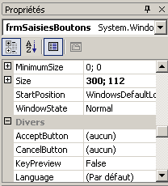
Certaines de ces propriétés sont à noter :
pour fixer la couleur de fond de la fenêtre | |
pour fixer la couleur des dessins ou du texte sur la fenêtre | |
pour associer un menu à la fenêtre | |
pour donner un titre à la fenêtre | |
pour fixer le type de fenêtre | |
pour fixer la police de caractères des écritures dans la fenêtre | |
pour fixer le nom de la fenêtre |
Ici, nous fixons les propriétés Text et Name :
Saisies & boutons - 1 | |
frmSaisiesBoutons |
A l'aide de la barre "Boîte à outils"
- sélectionnez les composants dont vous avez besoin
- déposez-les sur la fenêtre et donnez-leur leurs bonnes dimensions
 |  |
Une fois le composant choisi dans le "toolbox", utilisez la touche "Echap" pour faire disparaître la barre d'outils, puis déposez et dimensionnez le composant. Faites-le pour les trois composants nécessaires : Label, TextBox, Button. Pour aligner et dimensionner correctement les composants, utilisez le menu Format : |  |
Le principe du formatage est le suivant :
L'option Align vous permet d'aligner des composants |  |
L'option Make Same Size permet de faire que des composants aient la même hauteur ou la même largeur : |  |
L'option Horizontal Spacing permet par exemple d'aligner horizontalement des composants avec des intervalles entre eux de même taille. Idem pour l'option Vertical Spacing pour aligner verticalement. L'option Center in Form permet de centrer un composant horizontalement ou verticalement dans la fenêtre : | 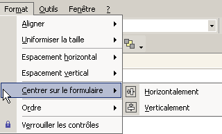 |
Une fois que les composants sont correctement placés sur la fenêtre, fixez leurs propriétés. Pour cela, cliquez droit sur le composant et prenez l'option Properties :
Sélectionnez le composant pour avoir sa fenêtre de propriétés. Dans celle-ci, modifiez les propriétés suivantes : name : lblSaisie, text : Saisie
Sélectionnez le composant pour avoir sa fenêtre de propriétés. Dans celle-ci, modifiez les propriétés suivantes : name : txtSaisie, text : ne rien mettre
name : cmdAfficher, text : Afficher
text : Saisies & boutons - 1 |  |
Nous pouvons exécuter (ctrl-F5) notre projet pour avoir un premier aperçu de la fenêtre en action : | |
Fermez la fenêtre. Il nous reste à écrire la procédure liée à un clic sur le bouton Afficher.
5.3.2. Gestion des événements d'un formulaire
Regardons le code qui a été généré par le concepteur graphique :
...
Public Class frmSaisiesBoutons
Inherits System.Windows.Forms.Form
' composants
Private components As System.ComponentModel.Container = Nothing
Friend WithEvents btnAfficher As System.Windows.Forms.Button
Friend WithEvents lblsaisie As System.Windows.Forms.Label
Friend WithEvents txtsaisie As System.Windows.Forms.TextBox
' constructeur
Public Sub New()
InitializeComponent()
End Sub
...
' initialisation des composants
Private Sub InitializeComponent()
...
End Sub
End Class
On notera tout d'abord la déclaration particulière des composants :
- le mot clé Friend indique une visibilité du composant qui s'étend à toutes les classes du projet
- le mot clé WithEvents indique que le composant génère des événements. Nous nous intéressons maintenant à la façon de gérer ces événements
Faites afficher la fenêtre de code du formulaire (Affichage/code ou F7) :
 |
La fenêtre ci-dessus présente deux listes déroulantes (1) et (2). La liste (1) est la liste des composants du formulaire :
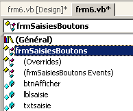
La liste(2) la liste des événements associés au composant sélectionné dans (1) :
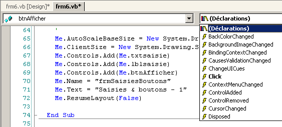
L'un des événements associés au composant est affiché en gras (ici Click). C'est l'événement par défaut du composant. L'accès au gestionnaire de cet événement particulier peut se faire en double-cliquant sur le composant dans la fenêtre de conception. VB.net génère alors automatiquement le squelette du gestionnaire d'événement dans la fenêtre de code et positionne l'utilisateur dessus. L'accès aux gestionnaires des autres événements se fait lui dans la fenêtre de code, en sélectionnant le composant dans la liste (1) et l'événement dans (2). VB.net génère alors le squelette du gestionnaire d'événement ou se positionne dessus s'il était déjà généré :
Private Sub btnAfficher_Click(ByVal sender As System.Object, ByVal e As System.EventArgs) Handles btnAfficher.Click
...
End Sub
Par défaut, VB.net C_E nomme le gestionnaire de l'événement E du composant C. On peut changer ce nom si cela nous convient. C'est cependant déconseillé. Les développeurs VB gardent en général le nom généré par VB ce qui donne une cohérence du nommage dans tous les programmes VB. L'association de la procédure btnAfficher_Click à l'événement Click du composant btnAfficher ne se fait par le nom de la procédure mais par le mot clé handles :
Handles btnAfficher.Click
Ci-dessus, le mot clé handles précise que la procédure gère l'événement Click du composant btnAfficher. Le gestionnaire d'événement précédent a deux paramètres :
l'objet à la source de l'événement (ici le bouton) | |
un objet EventArgs qui détaille l'événement qui s'est produit |
Nous n'utiliserons aucun de ces paramètres ici. Il ne nous reste plus qu'à compléter le code. Ici, nous voulons présenter une boîte de dialogue avec dedans le contenu du champ txtSaisie :
Private Sub btnAfficher_Click(ByVal sender As Object, ByVal e As System.EventArgs)
' on affiche le texte qui a été saisi dans la boîte de saisie TxtSaisie
MessageBox.Show("texte saisi= " + txtsaisie.Text, "Vérification de la saisie", MessageBoxButtons.OK, MessageBoxIcon.Information)
End Sub
Si on exécute l'application on obtient la chose suivante :

5.3.3. Une autre méthode pour gérer les événements
Pour le bouton btnAfficher, VS.NET a généré le code suivant :
Private Sub InitializeComponent()
...
'
'btnAfficher
'
Me.btnAfficher.Location = New System.Drawing.Point(102, 48)
Me.btnAfficher.Name = "btnAfficher"
Me.btnAfficher.Size = New System.Drawing.Size(88, 24)
Me.btnAfficher.TabIndex = 2
Me.btnAfficher.Text = "Afficher"
...
End Sub
...
' gestionnaire d'évt clic sur bouton cmdAfficher
Private Sub btnAfficher_Click(ByVal sender As System.Object, ByVal e As System.EventArgs) Handles btnAfficher.Click
...
End Sub
Nous pouvons associer la procédure btnAfficher_Click à l'événement Click du bouton btnAfficher d'une autre façon :
Private Sub InitializeComponent()
...
'
'btnAfficher
'
Me.btnAfficher.Location = New System.Drawing.Point(102, 48)
Me.btnAfficher.Name = "btnAfficher"
Me.btnAfficher.Size = New System.Drawing.Size(88, 24)
Me.btnAfficher.TabIndex = 2
Me.btnAfficher.Text = "Afficher"
AddHandler btnAfficher.Click, AddressOf btnAfficher_Click
...
End Sub
...
' gestionnaire d'évt clic sur bouton cmdAfficher
Private Sub btnAfficher_Click(ByVal sender As System.Object, ByVal e As System.EventArgs)
...
End Sub
La procédure btnAfficher_Click a perdu le mot clé Handles perdant ainsi son association avec l'événement btnAfficher.Click. Cette association est désormais faite à l'aide du mot clé AddHandler :
AddHandler btnAfficher.Click, AddressOf btnAfficher_Click
Le code ci-dessus qui sera placé dans la procédure InitializeComponent du formulaire, associe à l'événement btnAfficher.Click la procédure portant le nom btnAfficher_Click. Par ailleurs, le composant btnAfficher n'a plus besoin du mot clé WithEvents :
Friend btnAfficher As System.Windows.Forms.Button
Quelle est la différence entre les deux méthodes ?
- le mot clé handles ne permet d'associer un événement à une procédure qu'au moment de la conception. Le concepteur sait à l'avance qu'une procédure P doit gérer les événements E1, E2, ... et il écrit le code
Private Sub btnAfficher_Click(ByVal sender As System.Object, ByVal e As System.EventArgs) handles E1, E2, ..., En
Il est en effet possible pour une procédure de gérer plusieurs événements.
- le mot clé addhandler permet d'associer un événement à une procédure au moment de l'exécution. Ceci est utile dans un cadre producteur-consommateur d'événements. Un objet produit un événement particulier susceptible d'intéresser d'autres objets. Ceux-ci s'abonnent auprès du producteur pour recevoir l'événement (une température ayant dépassé un seuil critique, par exemple). Au cours de l'exécution de l'application, le producteur de l'événement sera amené à exécuter différentes instructions :
où E est l'événement produit par le producteur et Pi des procédures appartenant aux différents objets consommateurs de cet événement. Nous aurons l'occasion de revenir sur une application producteur-consommateur d'événements dans un prochain chapitre.
5.3.4. Conclusion
Des deux projets étudiés, nous pouvons conclure qu'une fois l'interface graphique construite avec VS.NET, le travail du développeur consiste à écrire les gestionnaires des événements qu'il veut gérer pour cette interface graphique. Nous ne présenterons désormais que le code de ceux-ci.
5.4. Quelques composants utiles
Nous présentons maintenant diverses applications mettant en jeu les composants les plus courants afin de découvrir les principales méthodes et propriétés de ceux-ci. Pour chaque application, nous présentons l'interface graphique et le code intéressant, notamment les gestionnaires d'événements.
5.4.1. formulaire Form
Nous commençons par présenter le composant indispensable, le formulaire sur lequel on dépose des composants. Nous avons déjà présenté quelques-unes de ses propriétés de base. Nous nous attardons ici sur quelques événements importants d'un formulaire.
le formulaire est en cours de chargement | |
le formulaire est en cours de fermeture | |
le formulaire est fermé |
L'événement Load se produit avant même que le formulaire ne soit affiché. L'événement Closing se produit lorsque le formulaire est en cours de fermeture. On peut encore arrêter cette fermeture par programmation. Nous construisons un formulaire de nom Form1 sans composant :
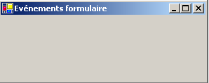
Nous traitons les trois événements précédents :
Private Sub Form1_Load(ByVal sender As Object, ByVal e As System.EventArgs) Handles MyBase.Load
' chargement initial du formulaire
MessageBox.Show("Evt Load", "Load")
End Sub
Private Sub Form1_Closing(ByVal sender As Object, ByVal e As System.ComponentModel.CancelEventArgs) Handles MyBase.Closing
' le formulaire est en train de se fermer
MessageBox.Show("Evt Closing", "Closing")
' on demande confirmation
Dim réponse As DialogResult = MessageBox.Show("Voulez-vous vraiment quitter l'application", "Closing", MessageBoxButtons.YesNo, MessageBoxIcon.Question)
If réponse = DialogResult.No Then
e.Cancel = True
End If
End Sub
Private Sub Form1_Closed(ByVal sender As Object, ByVal e As System.EventArgs) Handles MyBase.Closed
' le formulaire est en train de se fermer
MessageBox.Show("Evt Closed", "Closed")
End Sub
Nous utilisons la fonction MessageBox pour être averti des différents événements. L'événement Closing va se produire lorsque l'utilisateur ferme la fenêtre. |  |
Nous lui demandons alors s'il veut vraiment quitter l'application : | 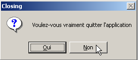 |
S'il répond Non, nous fixons la propriété Cancel de l'événement CancelEventArgs e que la méthode a reçu en paramètre. Si nous mettons cette propriété à False, la fermeture de la fenêtre est abandonnée, sinon elle se poursuit : | 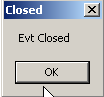 |
5.4.2. étiquettes Label et boîtes de saisie TextBox
Nous avons déjà rencontré ces deux composants. Label est un composant texte et TextBox un composant champ de saisie. Leur propriété principale est Text qui désigne soit le contenu du champ de saisie ou le texte du libellé. Cette propriété est en lecture/écriture. L'événement habituellement utilisé pour TextBox est TextChanged qui signale que l'utilisateur à modifié le champ de saisie. Voici un exemple qui utilise l'événement TextChanged pour suivre les évolutions d'un champ de saisie :
 |
n° | type | nom | rôle |
1 | TextBox | txtSaisie | champ de saisie |
2 | Label | lblControle | affiche le texte de 1 en temps réel |
3 | Button | cmdEffacer | pour effacer les champs 1 et 2 |
4 | Button | cmdQuitter | pour quitter l'application |
Le code pertinent de cette application est celui des gestionnaires d'événements :
' clic sur btn quitter
Private Sub cmdQuitter_Click(ByVal sender As Object, ByVal e As System.EventArgs) _
Handles cmdQuitter.Click
' clic sur bouton Quitter - on quitte l'application
Application.Exit()
End Sub
' modification champ txtSaisie
Private Sub txtSaisie_TextChanged(ByVal sender As Object, ByVal e As System.EventArgs) _
Handles txtSaisie.TextChanged
' le contenu du TextBox a changé - on le copie dans le Label lblControle
lblControle.Text = txtSaisie.Text
End Sub
' clic sur btn effacer
Private Sub cmdEffacer_Click(ByVal sender As Object, ByVal e As System.EventArgs) _
Handles cmdEffacer.Click
' on efface le contenu de la boîte de saisie
txtSaisie.Text = ""
End Sub
' une touche a été tapée
Private Sub txtSaisie_KeyPress(ByVal sender As Object, ByVal e As System.Windows.Forms.KeyPressEventArgs) _
Handles txtSaisie.KeyPress
' on regarde quelle touche a été tapée
Dim touche As Char = e.KeyChar
If touche = ControlChars.Cr Then
MessageBox.Show(txtSaisie.Text, "Contrôle", MessageBoxButtons.OK, MessageBoxIcon.Information)
e.Handled = True
End If
End Sub
On notera la façon de terminer l'application dans la procédure cmdQuitter_Click : Application.Exit(). L'exemple suivant utilise un TextBox multilignes :
 |
La liste des contrôles est la suivante :
n° | type | nom | rôle |
1 | TextBox | txtMultiLignes | champ de saisie multilignes |
2 | TextBox | txtAjout | champ de saisie monoligne |
3 | Button | btnAjouter | Ajoute le contenu de 2 à 1 |
Pour qu'un TextBox devienne multilignes on positionne les propriétés suivantes du contrôle :
pour accepter plusieurs lignes de texte | |
pour demander à ce que le contrôle ait des barres de défilement (Horizontal, Vertical, Both) ou non (None) | |
si égal à true, la touche Entrée fera passer à la ligne | |
si égal à true, la touche Tab générera une tabulation dans le texte |
Le code utile est celui qui traite le clic sur le bouton [Ajouter] et celui qui traite la modification du champ de saisie [txtAjout] :
' évt btnAjouter_Click
Private Sub btnAjouter_Click1(ByVal sender As Object, ByVal e As System.EventArgs) _
Handles btnAjouter.Click
' ajout du contenu de txtAjout à celui de txtMultilignes
txtMultilignes.Text &= txtAjout.Text
txtAjout.Text = ""
End Sub
' evt txtAjout_TextChanged
Private Sub txtAjout_TextChanged1(ByVal sender As Object, ByVal e As System.EventArgs) _
Handles txtAjout.TextChanged
' on fixe l'état du bouton Ajouter
btnAjouter.Enabled = txtAjout.Text.Trim() <> ""
End Sub
5.4.3. listes déroulantes ComboBox
 |  |
Un composant ComboBox est une liste déroulante doublée d'une zone de saisie : l'utilisateur peut soit choisir un élément dans (2) soit taper du texte dans (1). Il existe trois sortes de ComboBox fixées par la propriété Style :
liste non déroulante avec zone d'édition | |
liste déroulante avec zone d'édition | |
liste déroulante sans zone d'édition |
Par défaut, le type d'un ComboBox est DropDown. Pour découvrir la classe ComboBox, tapez ComboBox dans l'index de l'aide (Aide/Index). La classe ComboBox a un seul constructeur :
Public Sub New() | crée un objet ComboBox vide |
Les éléments du ComboBox sont disponibles dans la propriété Items :
C'est une propriété indexée, Items(i) désignant l'élément i du Combo. Soit C un combo et C.Items sa liste d'éléments. On a les propriétés suivantes :
nombre d'éléments du combo | |
élément i du combo | |
ajoute l'objet o en dernier élement du combo | |
ajoute un tableau d'objets en fin de combo | |
ajoute l'objet o en position i du combo | |
enlève l'élément i du combo | |
enlève l'objet o du combo | |
supprime tous les éléments du combo | |
rend la position i de l'objet o dans le combo |
On peut s'étonner qu'un combo puisse contenir des objets alors qu'habituellement il contient des chaînes de caractères. Au niveau visuel, ce sera le cas. Si un ComboBox contient un objet obj, il affiche la chaîne obj.ToString(). On se rappelle que tout objet à une méthode ToString héritée de la classe object et qui rend une chaîne de caractères "représentative" de l'objet. L'élément sélectionné dans le combo C est C.SelectedItem ou C.Items(C.SelectedIndex) où C.SelectedIndex est le n° de l'élément sélectionné, ce n° partant de zéro pour le premier élément.
Lors du choix d'un élément dans la liste déroulante se produit l'événement SelectedIndexChanged qui peut être alors utilisé pour être averti du changement de sélection dans le combo. Dans l'application suivante, nous utilisons cet événement pour afficher l'élément qui a été sélectionné dans la liste.
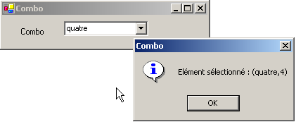
Nous ne présentons que le code pertinent de la fenêtre. Dans le constructeur du formulaire nous remplissons le combo :
Public Sub New()
' création formulaire
InitializeComponent()
' remplissage combo
cmbNombres.Items.AddRange(New String() {"zéro", "un", "deux", "trois", "quatre"})
' nous sélectionnons le 1er élément de la liste
cmbNombres.SelectedIndex = 0
End Sub
Nous traitons l'événement SelectedIndexChanged du combo qui signale un nouvel élément sélectionné :
Private Sub cmbNombres_SelectedIndexChanged(ByVal sender As Object, ByVal e As System.EventArgs) _
Handles cmbNombres.SelectedIndexChanged
' l'élément sélectionné a changé - on l'affiche
MessageBox.Show("Elément sélectionné : (" & cmbNombres.SelectedItem.ToString & "," & cmbNombres.SelectedIndex & ")", "Combo", MessageBoxButtons.OK, MessageBoxIcon.Information)
End Sub
5.4.4. composant ListBox
On se propose de construire l'interface suivante :
 |
Les composants de cette fenêtre sont les suivants :
n° | type | nom | rôle/propriétés |
0 | Form | Form1 | formulaire - BorderStyle=FixedSingle |
1 | TextBox | txtSaisie | champ de saisie |
2 | Button | btnAjouter | bouton permettant d'ajouter le contenu du champ de saisie 1 dans la liste 3 |
3 | ListBox | listBox1 | liste 1 |
4 | ListBox | listBox2 | liste 2 |
5 | Button | btn1TO2 | transfère les éléments sélectionnés de liste 1 vers liste 2 |
6 | Button | cmd2T0 | fait l'inverse |
7 | Button | btnEffacer1 | vide la liste 1 |
8 | Button | btnEffacer2 | vide la liste 2 |
- L'utilisateur tape du texte dans le champ 1. Il l'ajoute à la liste 1 avec le bouton Ajouter (2). Le champ de saisie (1) est alors vidé et l'utilisateur peut ajouter un nouvel élément.
- Il peut transférer des éléments d'une liste à l'autre en sélectionnant l'élément à transférer dans l'une des listes et en choississant le bouton de transfert adéquat 5 ou 6. L'élément transféré est ajouté à la fin de la liste de destination et enlevé de la liste source.
- Il peut double-cliquer sur un élément de la liste 1. Ce élément est alors transféré dans la boîte de saisie pour modification et enlevé de la liste 1.
Les boutons sont allumés ou éteints selon les règles suivantes :
- le bouton Ajouter n'est allumé que s'il y a un texte non vide dans le champ de saisie
- le bouton 5 de transfert de la liste 1 vers la liste 2 n'est allumé que s'il y a un élément sélectionné dans la liste 1
- le bouton 6 de transfert de la liste 2 vers la liste 1 n'est allumé que s'il y a un élément sélectionné dans la liste 2
- les boutons 7 et 8 d'effacement des listes 1 et 2 ne sont allumés que si la liste à effacer contient des éléments.
Dans les conditions précédentes, tous les boutons doivent être éteints lors du démarrage de l'application. C'est la propriété Enabled des boutons qu'il faut alors positionner à false. On peut le faire au moment de la conception ce qui aura pour effet de générer le code correspondant dans la méthode InitializeComponent ou de le faire nous-mêmes dans le constructeur comme ci-dessous :
Public Sub New()
' création initiale du formulaire
InitializeComponent()
' initialisations complémentaires
' on inhibe un certain nombre de boutons
btnAjouter.Enabled = False
btn1TO2.Enabled = False
btn2TO1.Enabled = False
btnEffacer1.Enabled = False
btnEffacer2.Enabled = False
End Sub
L'état du bouton Ajouter est contrôlé par le contenu du champ de saisie. C'est l'événement TextChanged qui nous permet de suivre les changements de ce contenu :
' chgt dans champ txtsaisie
Private Sub txtSaisie_TextChanged(ByVal sender As Object, ByVal e As System.EventArgs) _
Handles txtSaisie.TextChanged
' le contenu de txtSaisie a changé
' le bouton Ajouter n'est allumé que si la saisie est non vide
btnAjouter.Enabled = txtSaisie.Text.Trim() <> ""
End Sub
L'état des boutons de transfert dépend du fait qu'un élément a été sélectionné ou non dans la liste qu'ils contrôlent :
' chgt de l'élément sélectionné sans listbox1
Private Sub listBox1_SelectedIndexChanged(ByVal sender As Object, ByVal e As System.EventArgs) _
Handles listBox1.SelectedIndexChanged
' un élément a été sélectionné
' on allume le bouton de transfert 1 vers 2
btn1TO2.Enabled = True
End Sub
' chgt de l'élément sélectionné sans listbox2
Private Sub listBox2_SelectedIndexChanged(ByVal sender As Object, ByVal e As System.EventArgs) _
Handles listBox2.SelectedIndexChanged
' un élément a été sélectionné
' on allume le bouton de transfert 2 vers 1
btn2TO1.Enabled = True
End Sub
Le code associé au clic sur le bouton Ajouter est le suivant :
' clic sur btn Ajouter
Private Sub btnAjouter_Click(ByVal sender As Object, ByVal e As System.EventArgs) _
Handles btnAjouter.Click
' ajout d'un nouvel élément la liste 1
listBox1.Items.Add(txtSaisie.Text.Trim())
' raz de la saisie
txtSaisie.Text = ""
' Liste 1 n'est pas vide
btnEffacer1.Enabled = True
' retour du focus sur la boîte de saisie
txtSaisie.Focus()
End Sub
On notera la méthode Focus qui permet de mettre le "focus" sur un contrôle du formulaire. Le code associé au clic sur les boutons Effacer :
' clic sur btn Effacer1
Private Sub btnEffacer1_Click(ByVal sender As Object, ByVal e As System.EventArgs) _
Handles btnEffacer1.Click
' on efface la liste 1
listBox1.Items.Clear()
btnEffacer1.Enabled = False
End Sub
' clic sur btn effacer2
Private Sub btnEffacer2_Click(ByVal sender As Object, ByVal e As System.EventArgs)
' on efface la liste 2
listBox2.Items.Clear()
btnEffacer2.Enabled = False
End Sub
Le code de transfert des éléments sélectionnés d'une liste vers l'autre :
' clic sur btn btn1to2
Private Sub btn1TO2_Click(ByVal sender As Object, ByVal e As System.EventArgs) _
Handles btn1TO2.Click
' transfert de l'élément sélectionné dans Liste 1 vers Liste 2
transfert(listBox1, listBox2)
' boutons Effacer
btnEffacer2.Enabled = True
btnEffacer1.Enabled = listBox1.Items.Count <> 0
' boutons de transfert
btn1TO2.Enabled = False
btn2TO1.Enabled = False
End Sub
' clic sur btn btn2to1
Private Sub btn2TO1_Click(ByVal sender As Object, ByVal e As System.EventArgs) _
Handles btn2TO1.Click
' transfert de l'élément slectionné dans Liste 2 vers Liste 1
transfert(listBox2, listBox1)
' boutons Effacer
btnEffacer1.Enabled = True
btnEffacer2.Enabled = listBox2.Items.Count <> 0
' boutons de transfert
btn1TO2.Enabled = False
btn2TO1.Enabled = False
End Sub
' transfert
Private Sub transfert(ByVal l1 As ListBox, ByVal l2 As ListBox)
' transfert de l'élément sélectionné de la liste 1 vers la liste l2
' un élément sélectionné ?
If l1.SelectedIndex = -1 Then Return
' ajout dans l2
l2.Items.Add(l1.SelectedItem)
' suppression dans l1
l1.Items.RemoveAt(l1.SelectedIndex)
End Sub
Tout d'abord, on crée une méthode
Private Sub transfert(ByVal l1 As ListBox, ByVal l2 As ListBox)
qui transfère dans la liste l2 l'élément sélectionné dans la liste l1. Cela nous permet d'avoir une seule méthode au lieu de deux pour transférer un élément de listBox1 vers listBox2 ou de listBox2 vers listBox1. Avat de faire le transfert, on s'assure qu'il y a bien un élément sélectionné dans la liste l1 :
' un élément sélectionné ?
If l1.SelectedIndex = -1 Then Return
La propriété SelectedIndex vaut -1 si aucun élément n'est actuellement sélectionné. Dans les procédures
Private Sub btnXTOY_Click(ByVal sender As Object, ByVal e As System.EventArgs) _
Handles btnXTOY.Click
on opère le transfert de la liste X vers la liste Y et on change l'état de certains boutons pour refléter le nouvel état des listes.
5.4.5. cases à cocher CheckBox, boutons radio ButtonRadio
Nous nous proposons d'écrire l'application suivante :
 |
Les composants de la fenêtre sont les suivants :
n° | type | nom | rôle |
1 | RadioButton | radioButton1 radioButton2 radioButton3 | 3 boutons radio |
2 | CheckBox | chechBox1 chechBox2 chechBox3 | 3 cases à cocher |
3 | ListBox | lstValeurs | une liste |
Si on construit les trois boutons radio l'un après l'autre, ils font partie par défaut d'un même groupe. Aussi lorsque l'un est coché, les autres ne le sont pas. L'événement qui nous intéresse pour ces six contrôles est l'événement CheckChanged indiquant que l'état de la case à cocher ou du bouton radio a changé. Cet état est représenté dans les deux cas par la propriété booléenne Check qui à vrai signifie que le contrôle est coché. Nous avons ici utilisé une seule méthode pour traiter les six événements CheckChanged, la méthode affiche :
' affiche
Private Sub affiche(ByVal sender As Object, ByVal e As System.EventArgs) _
Handles checkBox1.CheckedChanged, checkBox2.CheckedChanged, checkBox3.CheckedChanged, _
radioButton1.CheckedChanged, radioButton2.CheckedChanged, radioButton3.CheckedChanged
' affiche l'état du bouton radio ou de la case à cocher
' est-ce un checkbox ?
If (TypeOf (sender) Is CheckBox) Then
Dim chk As CheckBox = CType(sender, CheckBox)
lstValeurs.Items.Insert(0, chk.Name & "=" & chk.Checked)
End If
' est-ce un radiobutton ?
If (TypeOf (sender) Is RadioButton) Then
Dim rdb As RadioButton = CType(sender, RadioButton)
lstValeurs.Items.Insert(0, rdb.Name & "=" & rdb.Checked)
End If
End Sub
La syntaxe TypeOf (sender) Is CheckBox permet de vérifier si l'objet sender est de type CheckBox. Cela nous permet ensuite de faire un transtypage vers le type exact de sender. La méthode affiche écrit dans la liste lstValeurs le nom du composant à l'origine de l'événement et la valeur de sa propriété Checked. A l'exécution, on voit qu'un clic sur un bouton radio provoque deux événements CheckChanged : l'un sur l'ancien bouton coché qui passe à "non coché" et l'autre sur le nouveau bouton qui passe à "coché".
5.4.6. variateurs ScrollBar
Il existe plusieurs types de variateur : le variateur horizontal (hScrollBar), le variateur vertical (vScrollBar), l'incrémenteur (NumericUpDown). |  |
Réalisons l'application suivante :
 |
n° | type | nom | rôle |
1 | hScrollBar | hScrollBar1 | un variateur horizontal |
2 | hScrollBar | hScrollBar2 | un variateur horizontal qui suit les variations du variateur 1 |
3 | TextBox | txtValeur | affiche la valeur du variateur horizontal ReadOnly=true pour empêcher toute saisie |
4 | NumericUpDown | incrémenteur | permet de fixer la valeur du variateur 2 |
- Un variateur ScrollBar permet à l'utilisateur de choisir une valeur dans une plage de valeurs entières symbolisée par la "bande" du variateur sur laquelle se déplace un curseur. La valeur du variateur est disponible dans sa propriété Value.
- Pour un variateur horizontal, l'extrémité gauche représente la valeur minimale de la plage, l'extrémité droite la valeur maximale, le curseur la valeur actuelle choisie. Pour un variateur vertical, le minimum est représenté par l'extrémité haute, le maximum par l'extrémité basse. Ces valeurs sont représentées par les propriétés Minimum et Maximum et valent par défaut 0 et 100.
- Un clic sur les extrémités du variateur fait varier la valeur d'un incrément (positif ou négatif) selon l'extrémité cliquée appelée SmallChange qui est par défaut 1.
- Un clic de part et d'autre du curseur fait varier la valeur d'un incrément (positif ou négatif) selon l'extrémité cliquée appelée LargeChange qui est par défaut 10.
- Lorsqu'on clique sur l'extrémité supérieure d'un variateur vertical, sa valeur diminue. Cela peut surprendre l'utilisateur moyen qui s'attend normalement à voir la valeur "monter". On règle ce problème en donnant une valeur négative aux propriétés SmallChange et LargeChange
- Ces cinq propriétés (Value, Minimum, Maximum, SmallChange, LargeChange) sont accessibles en lecture et écriture.
- L'événement principal du variateur est celui qui signale un changement de valeur : l'événement Scroll.
Un composant NumericUpDown est proche du variateur : il a lui aussi les propriétés Minimum, Maximum et Value, par défaut 0, 100, 0. Mais ici, la propriété Value est affichée dans une boîte de saisie faisant partie intégrante du contrôle. L'utilisateur peut lui même modifier cette valeur sauf si on a mis la propriété ReadOnly du contrôle à vrai. La valeur de l'incrément est fixé par la propriété Increment, par défaut 1. L'événement principal du composant NumericUpDown est celui qui signale un changement de valeur : l'événement ValueChanged. Le code utile de notre application est le suivant :
Le formulaire est mis en forme lors de sa construction :
' constructeur
Public Sub New()
' création initiale du formulaire
InitializeComponent()
' on donne au variateur 2 les mêmes caractéristiques qu'au variateur 1
hScrollBar2.Minimum = hScrollBar1.Value
hScrollBar2.Minimum = hScrollBar1.Minimum
hScrollBar2.Maximum = hScrollBar1.Maximum
hScrollBar2.LargeChange = hScrollBar1.LargeChange
hScrollBar2.SmallChange = hScrollBar1.SmallChange
' idem pour l'incrémenteur
incrémenteur.Minimum = hScrollBar1.Value
incrémenteur.Minimum = hScrollBar1.Minimum
incrémenteur.Maximum = hScrollBar1.Maximum
incrémenteur.Increment = hScrollBar1.SmallChange
' on donne au TextBox la valeur du variateur 1
txtValeur.Text = "" & hScrollBar1.Value
End Sub
Le gestionnaire qui suit les variations de valeur du variateur 1 :
' gestion variateur hscrollbar1
Private Sub hScrollBar1_Scroll(ByVal sender As Object, ByVal e As System.Windows.Forms.ScrollEventArgs) _
Handles hScrollBar1.Scroll
' changement de valeur du variateur 1
' on répercute sa valeur sur le variateur 2 et sur le textbox TxtValeur
hScrollBar2.Value = hScrollBar1.Value
txtValeur.Text = "" & hScrollBar1.Value
End Sub
Le gestionnaire qui suit les variations de valeur du variateur 2 :
' gestion variateur hscrollbar2
Private Sub hScrollBar2_Scroll(ByVal sender As Object, ByVal e As System.Windows.Forms.ScrollEventArgs) _
Handles hScrollBar2.Scroll
' on inhibe tout changement du variateur 2
' en le forçant à garder la valeur du variateur 1
e.NewValue = hScrollBar1.Value
End Sub
Le gestionnaire qui suit les variations du contrôle incrémenteur :
' gestion incrémenteur
Private Sub incrémenteur_ValueChanged(ByVal sender As Object, ByVal e As System.EventArgs) _
Handles incrémenteur.ValueChanged
' on fixe la valeur du variateur 2
hScrollBar2.Value = CType(incrémenteur.Value, Integer)
End Sub
5.5. Événements souris
Lorsqu'on dessine dans un conteneur, il est important de connaître la position de la souris pour par exemple afficher un point lors d'un clic. Les déplacements de la souris provoquent des événements dans le conteneur dans lequel elle se déplace.
 |  |
la souris vient d'entrer dans le domaine du contrôle | |
la souris vient de quitter le domaine du contrôle | |
la souris bouge dans le domaine du contrôle | |
Pression sur le bouton gauche de la souris | |
Relâchement du bouton gauche de la souris | |
l'utilisateur lâche un objet sur le contrôle | |
l'utilisateur entre dans le domaine du contrôle en tirant un objet | |
l'utilisateur sort du domaine du contrôle en tirant un objet | |
l'utilisateur passe au-dessus domaine du contrôle en tirant un objet |
Voici un programme permettant de mieux appréhender à quels moments se produisent les différents événements souris :
 |
n° | type | nom | rôle |
1 | Label | lblPosition | pour afficher la position de la souris dans le formulaire 1, la liste 2 ou le bouton 3 |
2 | ListBox | lstEvts | pour afficher les évts souris autres que MouseMove |
3 | Button | btnEffacer | pour effacer le contenu de 2 |
Les gestionnaires d'événements sont les suivants. Pour suivre les déplacements de la souris sur les trois contrôles, on n'écrit qu'un seul gestionnaire :
' évt form1_mousemove
Private Sub Form1_MouseMove(ByVal sender As System.Object, ByVal e As System.Windows.Forms.MouseEventArgs) _
Handles MyBase.MouseMove, lstEvts.MouseMove, btnEffacer.MouseMove, lstEvts.MouseMove
' mvt souris - on affiche les coordonnes (X,Y) de celle-ci
lblPosition.Text = "(" & e.X & "," & e.Y & ")"
End Sub
Il faut savoir qu'à chaque fois que la souris entre dans le domaine d'un contrôle, son système de coordonnées change. Son origine (0,0) est le coin supérieur gauche du contrôle sur lequel elle se trouve. Ainsi à l'exécution, lorsqu'on passe la souris du formulaire au bouton, on voit clairement le changement de coordonnées. Afin de mieux voir ces changements de domaine de la souris, on peut utiliser la propriété Cursor des contrôles :

Cette propriété permet de fixer la forme du curseur de souris lorsque celle-ci entre dans le domaine du contrôle. Ainsi dans notre exemple, nous avons fixé le curseur à Default pour le formulaire lui-même, Hand pour la liste 2 et à No pour le bouton 3 comme le montrent les copies d'écran ci-dessous.
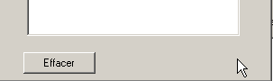


Dans la méthode [InitializeComponent], le code généré par ces choix est le suivant :
Me.lstEvts.Cursor = System.Windows.Forms.Cursors.Hand
Me.btnEffacer.Cursor = System.Windows.Forms.Cursors.No
Par ailleurs, pour détecter les entrées et sorties de la souris sur la liste 2, nous traitons les événements MouseEnter et MouseLeave de cette même liste :
' evt lstEvts_MouseEnter
Private Sub lstEvts_MouseEnter(ByVal sender As System.Object, ByVal e As System.EventArgs) _
Handles lstEvts.MouseEnter
affiche("MouseEnter sur liste")
End Sub
' evt lstEvts_MouseLeave
Private Sub lstEvts_MouseLeave(ByVal sender As System.Object, ByVal e As System.EventArgs) _
Handles lstEvts.MouseLeave
affiche("MouseLeave sur liste")
End Sub
' affiche
Private Sub affiche(ByVal message As String)
' on affiche le message en haut de la liste des evts
lstEvts.Items.Insert(0, message)
End Sub

Pour traiter les clics sur le formulaire, nous traitons les événements MouseDown et MouseUp :
' évt Form1_MouseDown
Private Sub Form1_MouseDown(ByVal sender As System.Object, ByVal e As System.Windows.Forms.MouseEventArgs) _
Handles MyBase.MouseDown
affiche("MouseDown sur formulaire")
End Sub
' évt Form1_MouseUp
Private Sub Form1_MouseUp(ByVal sender As System.Object, ByVal e As System.Windows.Forms.MouseEventArgs) _
Handles MyBase.MouseUp
affiche("MouseUp sur formulaire")
End Sub
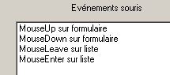
Enfin, le code du gestionnaire de clic sur le bouton Effacer :
' évt btnEffacer_Click
Private Sub btnEffacer_Click(ByVal sender As System.Object, ByVal e As System.EventArgs) _
Handles btnEffacer.Click
' efface la liste des evts
lstEvts.Items.Clear()
End Sub
5.6. Créer une fenêtre avec menu
Voyons maintenant comment créer une fenêtre avec menu. Nous allons créer la fenêtre suivante :
 |
Le contrôle 1 est un TextBox en lecture seule (ReadOnly=true) et de nom txtStatut. L'arborescence du menu est la suivante :
 |  |
Les options de menu sont des contrôles comme les autres composants visuels et ont des propriétés et événements. Par exemple le tableau des propriétés de l'option de menu A1 :
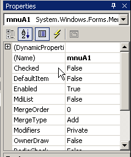
Deux propriétés sont utilisées dans notre exemple :
le nom du contrôle menu | |
le libellé de l'option de menu |
Les propriétés des différentes options de menu de notre exemple sont les suivantes :
Name | Text |
mnuA | options A |
mnuA1 | A1 |
mnuA2 | A2 |
mnuA3 | A3 |
mnuB | options B |
mnuB1 | B1 |
mnuSep1 | - (séparateur) |
mnuB2 | B2 |
mnuB3 | B3 |
mnuB31 | B31 |
mnuB32 | B32 |
Pour créer un menu, on choisit le composant "MainMenu" dans la barre "ToolBox" :

On a alors un menu vide qui s'installe sur le formulaire avec des cases vides intitulées "Type Here". Il suffit d'y indiquer les différentes options du menu :
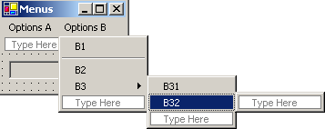
Pour insérer un séparateur entre deux options comme ci-dessus entre les options B1 et B2, positionnez-vous à l'emplacement du séparateur dans le menu, cliquez droit et prenez l'option Insert Separator :

Si on lance l'application par ctrl-F5, on obtient un formulaire avec un menu qui pour l'instant ne fait rien. Les options de menu sont traitées comme des composants : elles ont des propriétés et des événements. Dans [fenêtre de code], sélectionnez le composant mnuA1 puis sélectionnez les événements associés :

Si ci-dessus on génère l'événement Click, VS.NET génère automatiquement la procédure suivante :
Private Sub mnuA1_Click(ByVal sender As Object, ByVal e As System.EventArgs) Handles mnuA.Click
....
End Sub
Nous pourrions procéder ainsi pour toutes les options de menu. Ici, la même procédure peut être utilisée pour toutes les options. Aussi renomme-t-on la procédure précédente affiche et nous déclarons les événements qu'elle gère :
Private Sub affiche(ByVal sender As Object, ByVal e As System.EventArgs) _
Handles mnuA1.Click, mnuA2.Click, mnuB1.Click, mnuB2.Click, mnuB31.Click, mnuB32.Click
' affiche dans le TextBox le nom du sous-menu choisi
txtStatut.Text = (CType(sender, MenuItem)).Text
End Sub
Dans cette méthode, nous nous contentons d'afficher la propriété Text de l'option de menu à la source de l'événement. La source de l'événement sender est de type object. Les options de menu sont elles de type MenuItem, aussi est-on obligé ici de faire un transtypage de object vers MenuItem. Exécutez l'application et sélectionnez l'option A1 pour obtenir le message suivant :

Le code utile de cette application, outre celui de la méthode affiche, est celui de la construction du menu dans le constructeur du formulaire (InitializeComponent) :
Private Sub InitializeComponent()
Me.mainMenu1 = New System.Windows.Forms.MainMenu
Me.mnuA = New System.Windows.Forms.MenuItem
Me.mnuA1 = New System.Windows.Forms.MenuItem
Me.mnuA2 = New System.Windows.Forms.MenuItem
Me.mnuA3 = New System.Windows.Forms.MenuItem
Me.mnuB = New System.Windows.Forms.MenuItem
Me.mnuB1 = New System.Windows.Forms.MenuItem
Me.mnuB2 = New System.Windows.Forms.MenuItem
Me.mnuB3 = New System.Windows.Forms.MenuItem
Me.mnuB31 = New System.Windows.Forms.MenuItem
Me.mnuB32 = New System.Windows.Forms.MenuItem
Me.txtStatut = New System.Windows.Forms.TextBox
Me.mnuSep1 = New System.Windows.Forms.MenuItem
Me.SuspendLayout()
'
' mainMenu1
'
Me.mainMenu1.MenuItems.AddRange(New System.Windows.Forms.MenuItem() {Me.mnuA, Me.mnuB})
'
' mnuA
'
Me.mnuA.Index = 0
Me.mnuA.MenuItems.AddRange(New System.Windows.Forms.MenuItem() {Me.mnuA1, Me.mnuA2, Me.mnuA3})
Me.mnuA.Text = "Options A"
'
' mnuA1
'
Me.mnuA1.Index = 0
Me.mnuA1.Text = "A1"
'
' mnuA2
'
Me.mnuA2.Index = 1
Me.mnuA2.Text = "A2"
'
' mnuA3
'
Me.mnuA3.Index = 2
Me.mnuA3.Text = "A3"
'
' mnuB
'
Me.mnuB.Index = 1
Me.mnuB.MenuItems.AddRange(New System.Windows.Forms.MenuItem() {Me.mnuB1, Me.mnuSep1, Me.mnuB2, Me.mnuB3})
Me.mnuB.Text = "Options B"
'
' mnuB1
'
Me.mnuB1.Index = 0
Me.mnuB1.Text = "B1"
'
' mnuB2
'
Me.mnuB2.Index = 2
Me.mnuB2.Text = "B2"
'
' mnuB3
'
Me.mnuB3.Index = 3
Me.mnuB3.MenuItems.AddRange(New System.Windows.Forms.MenuItem() {Me.mnuB31, Me.mnuB32})
Me.mnuB3.Text = "B3"
'
' mnuB31
'
Me.mnuB31.Index = 0
Me.mnuB31.Text = "B31"
'
' mnuB32
'
Me.mnuB32.Index = 1
Me.mnuB32.Text = "B32"
'
' txtStatut
'
Me.txtStatut.Location = New System.Drawing.Point(8, 8)
Me.txtStatut.Name = "txtStatut"
Me.txtStatut.ReadOnly = True
Me.txtStatut.Size = New System.Drawing.Size(112, 20)
Me.txtStatut.TabIndex = 0
Me.txtStatut.Text = ""
'
' mnuSep1
'
Me.mnuSep1.Index = 1
Me.mnuSep1.Text = "-"
'
' Form1
'
Me.AutoScaleBaseSize = New System.Drawing.Size(5, 13)
Me.ClientSize = New System.Drawing.Size(136, 42)
Me.Controls.Add(txtStatut)
Me.Menu = Me.mainMenu1
Me.Name = "Form1"
Me.Text = "Menus"
Me.ResumeLayout(False)
End Sub
On notera l'instruction qui associe le menu au formulaire :
Me.Menu = Me.mainMenu1
5.7. Composants non visuels
Nous nous intéressons maintenant à un certain nombre de composants non visuels : on les utilise lors de la conception mais on ne les voit pas lors de l'exécution.
5.7.1. Boîtes de dialogue OpenFileDialog et SaveFileDialog
Nous allons construire l'application suivante :
 |
Les contrôles sont les suivants :
N° | type | nom | rôle |
1 | TextBox multilignes | txtTexte | texte tapé par l'utilisateur ou chargé à partir d'un fichier |
2 | Button | btnSauvegarder | permet de sauvegarder le texte de 1 dans un fichier texte |
3 | Button | btnCharger | permet de charger le contenu d'un fichier texte dans 1 |
4 | Button | btnEffacer | efface le contenu de 1 |
Deux contrôles non visuels sont utilisés :
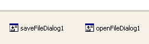
Lorsqu'ils sont pris dans le "ToolBox " et déposés sur le formulaire, ils sont placés dans une zone à part en bas du formulaire. Les composants "Dialog" sont pris dans le "ToolBox" :

Le code du bouton Effacer est simple :
Private Sub btnEffacer_Click(ByVal sender As Object, ByVal e As System.EventArgs) _
Handles btnEffacer.Click
' on efface la boîte de saisie
txtTexte.Text = ""
End Sub
La classe SaveFileDialog est définie comme suit :

Elle dérive de plusieurs niveaux de classe. De ces nombreuses propriétés et méthodes nous retiendrons les suivantes :
les types de fichiers proposés dans la liste déroulante des types de fichiers de la boîte de dialogue | |
le n° du type de fichier proposé par défaut dans la liste ci-dessus. Commence à 0. | |
le dossier présenté initialement pour la sauvegarde du fichier | |
le nom du fichier de sauvegarde indiqué par l'utilisateur | |
méthode qui affiche la boîte de dialogue de sauvegarde. Rend un résultat de type DialogResult. |
La méthode ShowDialog affiche une boîte de dialogue analogue à la suivante :
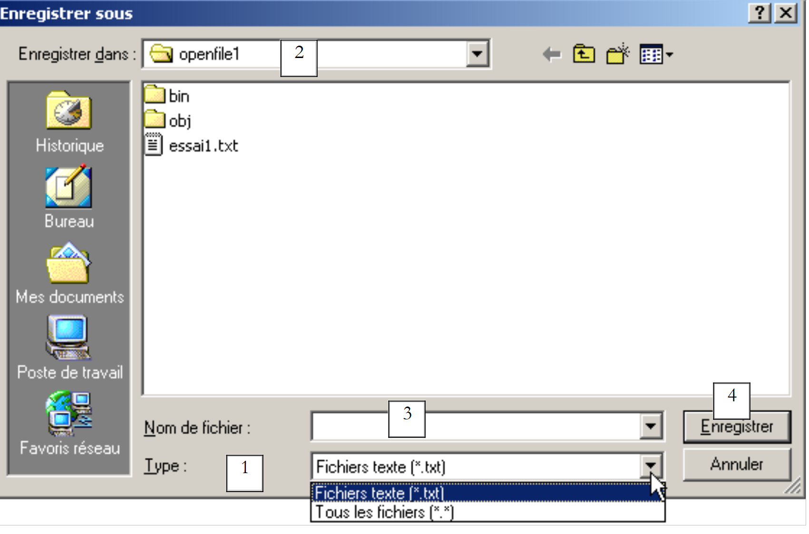 |
liste déroulante construite à partir de la propriété Filter. Le type de fichier proposé par défaut est fixé par FilterIndex | |
dossier courant, fixé par InitialDirectory si cette propriété a été renseignée | |
nom du fichier choisi ou tapé directement par l'utilisateur. Sera disponible dans la propriété FileName | |
boutons Enregistrer/Annuler. Si le bouton Enregistrer est utilisé, la fonction ShowDialog rend le résultat DialogResult.OK |
La procédure de sauvegarde peut s'écrire ainsi :
Private Sub btnSauvegarder_Click(ByVal sender As Object, ByVal e As System.EventArgs) _
Handles btnSauvegarder.Click
' on sauvegarde la boîte de saisie dans un fichier texte
' on paramètre la boîte de dialogue savefileDialog1
saveFileDialog1.InitialDirectory = Application.ExecutablePath
saveFileDialog1.Filter = "Fichiers texte (*.txt)|*.txt|Tous les fichiers (*.*)|*.*"
saveFileDialog1.FilterIndex = 0
' on affiche la boîte de dialogue et on récupère son résultat
If saveFileDialog1.ShowDialog() = DialogResult.OK Then
' on récupère le nom du fichier
Dim nomFichier As String = saveFileDialog1.FileName
Dim fichier As StreamWriter = Nothing
Try
' on ouvre le fichier en écriture
fichier = New StreamWriter(nomFichier)
' on écrit le texte dedans
fichier.Write(txtTexte.Text)
Catch ex As Exception
' problème
MessageBox.Show("Problème à l'écriture du fichier (" + ex.Message + ")", "Erreur", MessageBoxButtons.OK, MessageBoxIcon.Error)
Return
Finally
' on ferme le fichier
Try
fichier.Close()
Catch
End Try
End Try
End If
End Sub
- On fixe le dossier initial au dossier qui contient l'exécutable de l'application :
- On fixe les types de fichiers à présenter
On notera la syntaxe des filtres filtre1|filtre2|..|filtren avec filtrei= Texte|modèle de fichier. Ici l'utilisateur aura le choix entre les fichiers *.txt et *.*.
- On fixe le type de fichier à présenter au début
Ici, ce sont les fichiers de type *.txt qui seront présentés tout d'abord à l'utilisateur.
- La boîte de dialogue est affichée et son résultat récupéré
If saveFileDialog1.ShowDialog() = DialogResult.OK Then
- Pendant que la boîte de dialogue est affichée, l'utilisateur n'a plus accès au formulaire principal (boîte de dialogue dite modale). L'utilisateur fixe le nom du fichier à sauvegarder et quitte la boîte soit par le bouton Enregistrer, soit par le bouton Annuler soit en fermant la boîte. Le résultat de la méthode ShowDialog est DialogResult.OK uniquement si l'utilisateur a utilisé le bouton Enregistrer pour quitter la boîte de dialogue.
- Ceci fait, le nom du fichier à créer est maintenant dans la propriété FileName de l'objet saveFileDialog1. On est alors ramené à la création classique d'un fichier texte. On y écrit le contenu du TextBox : txtTexte.Text tout en gérant les exceptions qui peuvent se produire.
La classe OpenFileDialog est très proche de la classe SaveFileDialog et dérive de la même lignée de classes. De ces propriétés et méthodes nous retiendrons les suivantes :
les types de fichiers proposés dans la liste déroulante des types de fichiers de la boîte de dialogue | |
le n° du type de fichier proposé par défaut dans la liste ci-dessus. Commence à 0. | |
le dossier présenté initialement pour la recherche du fichier à ouvrir | |
le nom du fichier à ouvrir indiqué par l'utilisateur | |
méthode qui affiche la boîte de dialogue de sauvegarde. Rend un résultat de type DialogResult. |
La méthode ShowDialog affiche une boîte de dialogue analogue à la suivante :
 |
liste déroulante construite à partir de la propriété Filter. Le type de fichier proposé par défaut est fixé par FilterIndex | |
dossier courant, fixé par InitialDirectory si cette propriété a été renseignée | |
nom du fichier choisi ou tapé directement par l'utilisateur. Sera disponible dans la proprité FileName | |
boutons Ouvrir/Annuler. Si le bouton Ouvrir est utilisé, la fonction ShowDialog rend le résultat DialogResult.OK |
La procédure d'ouverture peut s'écrire ainsi :
Private Sub btnCharger_Click(ByVal sender As Object, ByVal e As System.EventArgs) _
Handles btnCharger.Click
' on charge un fichier texte dans la boîte de saisie
' on paramètre la boîte de dialogue openfileDialog1
openFileDialog1.InitialDirectory = Application.ExecutablePath
openFileDialog1.Filter = "Fichiers texte (*.txt)|*.txt|Tous les fichiers (*.*)|*.*"
openFileDialog1.FilterIndex = 0
' on affiche la boîte de dialogue et on récupère son résultat
If openFileDialog1.ShowDialog() = DialogResult.OK Then
' on récupère le nom du fichier
Dim nomFichier As String = openFileDialog1.FileName
Dim fichier As StreamReader = Nothing
Try
' on ouvre le fichier en lecture
fichier = New StreamReader(nomFichier)
' on lit tout le fichier et on le met dans le TextBox
txtTexte.Text = fichier.ReadToEnd()
Catch ex As Exception
' problème
MessageBox.Show("Problème à la lecture du fichier (" + ex.Message + ")", "Erreur", MessageBoxButtons.OK, MessageBoxIcon.Error)
Return
Finally
' on ferme le fichier
Try
fichier.Close()
Catch
End Try
End Try
End If
End Sub
- On fixe le dossier initial au dossier qui contient l'exécutable de l'application :
- On fixe les types de fichiers à présenter
- On fixe le type de fichier à présenter au début
Ici, ce sont les fichiers de type *.txt qui seront présentés tout d'abord à l'utilisateur.
- La boîte de dialogue est affichée et son résultat récupéré
If openFileDialog1.ShowDialog() = DialogResult.OK Then
Pendant que la boîte de dialogue est affichée, l'utilisateur n'a plus accès au formulaire principal (boîte de dialogue dite modale). L'utilisateur fixe le nom du fichier à ouvrir et quitte la boîte soit par le bouton Ouvrir, soit par le bouton Annuler soit en fermant la boîte. Le résultat de la méthode ShowDialog est DialogResult.OK uniquement si l'utilisateur a utilisé le bouton Ouvrir pour quitter la boîte de dialogue.
- Ceci fait, le nom du fichier à créer est maintenant dans la propriété FileName de l'objet openFileDialog1. On est alors ramené à la lecture classique d'un fichier texte. On notera la méthode qui permet de lire la totalité d'un fichier :
- le contenu du fichier est mis dans le TextBox txtTexte. On gère les exceptions qui peuvent se produire.
5.7.2. Boîtes de dialogue FontColor et ColorDialog
Nous continuons l'exemple précédent en présentant deux nouveaux boutons :
 |
N° | type | nom | rôle |
6 | Button | btnCouleur | pour fixer la couleur des caractères du TextBox |
7 | Button | btnPolice | pour fixer la police de caractères du TextBox |
Nous déposons sur le formulaire un contrôle ColorDialog et un contrôle FontDialog :

Les classes FontDialog et ColorDialog ont une méthode ShowDialog analogue à la méthode ShowDialog des classes OpenFileDialog et SaveFileDialog. La méthode ShowDialog de la classe ColorDialog permet de choisir une couleur :

Si l'utilisateur quitte la boîte de dialogue avec le bouton OK, le résultat de la méthode ShowDialog est DialogResult.OK et la couleur choisie est dans la propriété Color de l'objet ColorDialog utilisé. La méthode ShowDialog de la classe FontDialog permet de choisir une police de caractères :

Si l'utilisateur quitte la boîte de dialogue avec le bouton OK, le résultat de la méthode ShowDialog est DialogResult.OK et la police choisie est dans la propriété Font de l'objet FontDialog utilisé. Nous avons les éléments pour traiter les clics sur les boutons Couleur et Police :
Private Sub btnCouleur_Click(ByVal sender As Object, ByVal e As System.EventArgs) _
Handles btnCouleur.Click
' choix d'une couleur de texte
If colorDialog1.ShowDialog() = DialogResult.OK Then
' on change la propriété forecolor du TextBox
txtTexte.ForeColor = colorDialog1.Color
End If
End Sub
Private Sub btnPolice_Click(ByVal sender As Object, ByVal e As System.EventArgs) _
Handles btnPolice.Click
' choix d'une police de caractères
If fontDialog1.ShowDialog() = DialogResult.OK Then
' on change la propriété font du TextBox
txtTexte.Font = fontDialog1.Font
End If
End Sub
5.7.3. Timer
Nous nous proposons ici d'écrire l'application suivante :
 |
n° | Type | Nom | Rôle |
1 | TextBox, ReadOnly=true | txtChrono | affiche un chronomètre |
2 | Button | btnArretMarche | bouton Arrêt/Marche du chronomètre |
3 | Timer | timer1 | composant émettant ici un événement toutes les secondes |
Le chronomètre en marche :
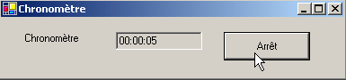
Le chronomètre arrêté :

Pour changer toutes les secondes le contenu du TextBox txtChrono, il nous faut un composant qui génère un événement toutes les secondes, événement qu'on pourra intercepter pour mettre à jour l'affichage du chronomètre. Ce composant c'est le Timer :

Une fois ce composant installé sur le formulaire (dans la partie des composants non visuels), un objet de type Timer est créé dans le constructeur du formulaire. La classe System.Windows.Forms.Timer est définie comme suit :

De ses propriétés nous ne retiendrons que les suivantes :
nombre de millisecondes au bout duquel un événement Tick est émis. | |
l'événement produit à la fin de Interval millisecondes | |
rend le timer actif (true) ou inactif (false) |
Dans notre exemple le timer s'appelle timer1 et timer1.Interval est mis à 1000 ms (1s). L'événement Tick se produira donc toutes les secondes. Le clic sur le bouton Arrêt/Marche est traité par la procédure suivante :
Private Sub btnArretMarche_Click(ByVal sender As Object, ByVal e As System.EventArgs) _
Handles btnArretMarche.Click
' arrêt ou marche ?
If btnArretMarche.Text = "Marche" Then
' on note l'heure de début
début = DateTime.Now
' on l'affiche
txtChrono.Text = "00:00:00"
' on lance le timer
timer1.Enabled = True
' on change le libellé du bouton
btnArretMarche.Text = "Arrêt"
' fin
Return
End If '
If btnArretMarche.Text = "Arrêt" Then
' arrêt du timer
timer1.Enabled = False
' on change le libellé du bouton
btnArretMarche.Text = "Marche"
' fin
Return
End If
End Sub
Private Sub timer1_Tick(ByVal sender As Object, ByVal e As System.EventArgs) _
Handles timer1.Tick
' une seconde s'est écoulée
Dim maintenant As DateTime = DateTime.Now
Dim durée As TimeSpan = DateTime.op_Subtraction(maintenant, début)
txtChrono.Text = "" + durée.Hours.ToString("d2") + ":" + durée.Minutes.ToString("d2") + ":" + durée.Seconds.ToString("d2")
End Sub
Le libellé du bouton Arret/Marche est soit "Arrêt" soit "Marche". On est donc obligé de faire un test sur ce libellé pour savoir quoi faire.
- dans le cas de "Marche", on note l'heure de début dans une variable qui est une variable globale de l'objet formulaire, le timer est lancé (Enabled=true) et le libellé du bouton passe à "Arrêt".
- dans le cas de "Arrêt", on arrête le timer (Enabled=false) et on passe le libellé du bouton à "Marche".
Public Class Timer1
Inherits System.Windows.Forms.Form
Private WithEvents timer1 As System.Windows.Forms.Timer
Private WithEvents btnArretMarche As System.Windows.Forms.Button
Private components As System.ComponentModel.IContainer
Private WithEvents txtChrono As System.Windows.Forms.TextBox
Private WithEvents label1 As System.Windows.Forms.Label
' variables d'instance
Private début As DateTime
L'attribut début ci-dessus est connu dans toutes les méthodes de la classe. Il nous reste à traiter l'événement Tick sur l'objet timer1, événement qui se produit toutes les secondes :
Private Sub timer1_Tick(ByVal sender As Object, ByVal e As System.EventArgs) _
Handles timer1.Tick
' une seconde s'est écoulée
Dim maintenant As DateTime = DateTime.Now
Dim durée As TimeSpan = DateTime.op_Subtraction(maintenant, début)
txtChrono.Text = "" + durée.Hours.ToString("d2") + ":" + durée.Minutes.ToString("d2") + ":" + durée.Seconds.ToString("d2")
End Sub
On calcule le temps écoulé depuis l'heure de lancement du chronomètre. On obtient un objet de type TimeSpan qui représente une durée dans le temps. Celle-ci doit être affichée dans le chronomètre sous la forme hh:mm:ss. Pour cela nous utilisons les propriétés Hours, Minutes, Seconds de l'objet TimeSPan qui représentent respectivement les heures, minutes, secondes de la durée que nous affichons au format ToString("d2") pour avoir un affichage sur 2 chiffres.
5.8. L'exemple IMPOTS
On reprend l'application IMPOTS déjà traitée deux fois. Nous y ajoutons maintenant une interface graphique :
 |
Les contrôles sont les suivants
n° | type | nom | rôle |
RadioButton | rdOui | coché si marié | |
RadioButton | rdNon | coché si pas marié | |
NumericUpDown | incEnfants | nombre d'enfants du contribuable Minimum=0, Maximum=20, Increment=1 | |
TextBox | txtSalaire | salaire annuel du contribuable en F | |
TextBox | txtImpots | montant de l'impôt à payer ReadOnly=true | |
Button | btnCalculer | lance le calcul de l'impôt | |
Button | btnEffacer | remet le formulaire dans son état initial lors du chargement | |
Button | btnQuitter | pour quitter l'application |
Règles de fonctionnement
- le bouton Calculer reste éteint tant qu'il n'y a rien dans le champ du salaire
- si lorsque le calcul est lancé, il s'avère que le salaire est incorrect, l'erreur est signalée :

Le programme est donné ci-dessous. Il utilise la classe impot créée dans le chapitre sur les classes. Une partie du code produit automatiquement pas VS.NET n'a pas été ici reproduit.
using System;
using System.Drawing;
using System.Collections;
using System.ComponentModel;
using System.Windows.Forms;
using System.Data;
' options
Option Explicit On
Option Strict On
' espaces de noms
Imports System
Imports System.Drawing
Imports System.Collections
Imports System.ComponentModel
Imports System.Windows.Forms
Imports System.Data
' classe formulaire
Public Class frmImpots
Inherits System.Windows.Forms.Form
Private WithEvents label1 As System.Windows.Forms.Label
Private WithEvents rdOui As System.Windows.Forms.RadioButton
Private WithEvents rdNon As System.Windows.Forms.RadioButton
Private WithEvents label2 As System.Windows.Forms.Label
Private WithEvents txtSalaire As System.Windows.Forms.TextBox
Private WithEvents label3 As System.Windows.Forms.Label
Private WithEvents label4 As System.Windows.Forms.Label
Private WithEvents groupBox1 As System.Windows.Forms.GroupBox
Private WithEvents btnCalculer As System.Windows.Forms.Button
Private WithEvents btnEffacer As System.Windows.Forms.Button
Private WithEvents btnQuitter As System.Windows.Forms.Button
Private WithEvents txtImpots As System.Windows.Forms.TextBox
Private components As System.ComponentModel.Container = Nothing
Private WithEvents incEnfants As System.Windows.Forms.NumericUpDown
' tableaux de données nécessaires au calcul de l'impôt
Private limites() As Decimal = {12620D, 13190D, 15640D, 24740D, 31810D, 39970D, 48360D, 55790D, 92970D, 127860D, 151250D, 172040D, 195000D, 0D}
Private coeffR() As Decimal = {0D, 0.05D, 0.1D, 0.15D, 0.2D, 0.25D, 0.3D, 0.35D, 0.4D, 0.45D, 0.55D, 0.5D, 0.6D, 0.65D}
Private coeffN() As Decimal = {0D, 631D, 1290.5D, 2072.5D, 3309.5D, 4900D, 6898.5D, 9316.5D, 12106D, 16754.5D, 23147.5D, 30710D, 39312D, 49062D}
' objet impôt
Private objImpôt As impot = Nothing
Public Sub New()
InitializeComponent()
' initialisation du formulaire
btnEffacer_Click(Nothing, Nothing)
btnCalculer.Enabled = False
' création d'un objet impôt
Try
objImpôt = New impot(limites, coeffR, coeffN)
Catch ex As Exception
MessageBox.Show("Impossible de créer l'objet impôt (" + ex.Message + ")", "Erreur", MessageBoxButtons.OK, MessageBoxIcon.Error)
' on inhibe le champ de saisie du salaire
txtSalaire.Enabled = False
End Try 'try-catch
End Sub
Protected Overloads Sub Dispose(ByVal disposing As Boolean)
....
End Sub
Private Sub InitializeComponent()
Me.btnQuitter = New System.Windows.Forms.Button
Me.groupBox1 = New System.Windows.Forms.GroupBox
Me.btnEffacer = New System.Windows.Forms.Button
Me.btnCalculer = New System.Windows.Forms.Button
Me.txtSalaire = New System.Windows.Forms.TextBox
Me.label1 = New System.Windows.Forms.Label
Me.label2 = New System.Windows.Forms.Label
Me.label3 = New System.Windows.Forms.Label
Me.rdNon = New System.Windows.Forms.RadioButton
Me.txtImpots = New System.Windows.Forms.TextBox
Me.label4 = New System.Windows.Forms.Label
Me.rdOui = New System.Windows.Forms.RadioButton
Me.incEnfants = New System.Windows.Forms.NumericUpDown
Me.groupBox1.SuspendLayout()
CType(Me.incEnfants, System.ComponentModel.ISupportInitialize).BeginInit()
Me.SuspendLayout()
....
End Sub 'InitializeComponent
Public Shared Sub Main()
Application.Run(New frmImpots)
End Sub 'Main
Private Sub btnEffacer_Click(ByVal sender As Object, ByVal e As System.EventArgs) _
Handles btnEffacer.Click
' raz du formulaire
incEnfants.Value = 0
txtSalaire.Text = ""
txtImpots.Text = ""
rdNon.Checked = True
End Sub 'btnEffacer_Click
Private Sub txtSalaire_TextChanged(ByVal sender As Object, ByVal e As System.EventArgs) _
Handles txtSalaire.TextChanged
' état du bouton Calculer
btnCalculer.Enabled = txtSalaire.Text.Trim() <> ""
End Sub 'txtSalaire_TextChanged
Private Sub btnQuitter_Click(ByVal sender As Object, ByVal e As System.EventArgs) _
Handles btnQuitter.Click
' fin application
Application.Exit()
End Sub 'btnQuitter_Click
Private Sub btnCalculer_Click(ByVal sender As Object, ByVal e As System.EventArgs) _
Handles btnCalculer.Click
' le salaire est-il correct ?
Dim intSalaire As Integer = 0
Try
' récupération du salaire
intSalaire = Integer.Parse(txtSalaire.Text)
' il doit être >=0
If intSalaire < 0 Then
Throw New Exception("")
End If
Catch ex As Exception
' msg d'erreur
MessageBox.Show(Me, "Salaire incorrect", "Erreur de saisie", MessageBoxButtons.OK, MessageBoxIcon.Error)
' focus sur champ erroné
txtSalaire.Focus()
' sélection du texte du champ de saisie
txtSalaire.SelectAll()
' retour à l'interface visuelle
Return
End Try 'try-catch
' le salaire est correct - on calcule l'impôt
txtImpots.Text = "" & CLng(objImpôt.calculer(rdOui.Checked, CInt(incEnfants.Value), intSalaire))
End Sub 'btnCalculer_Click
End Class
Nous utilisons ici l'assemblage impots.dll résultat de la compilation de la classe impots du chapitre 2. Rappelons que cet assemblage peut être produit en mode console par la commande
Cette commande produit le fichier impots.dll appelé assemblage. Cet assemblage peut être ensuite utilisé dans différents projets. Ici, dans notre projet sous VS.NET, nous utilisons la fenêtre des propriétés du projet :

Pour ajouter une référence (un assemblage) nous cliquons droit sur le lot clé References ci-dessus, nous prenons l'option [Ajouter une référence] et nous désignons l'assemblage [impots.dll] que nous avons pris soin de mettre dans le dossier du projet :
dos>dir
01/03/2004 14:39 9 250 gui_impots.vb
01/03/2004 14:37 4 096 impots.dll
01/03/2004 14:41 12 288 gui_impots.exe
Une fois inclus l'assemblage [impots.dll] dans le projet, la classe [impots] devient connue du projet. Auparavant elle ne l'est pas. Une autre méthode est d'inclure le source impots.vb dans le projet. Pour cela, dans la fenêtre des propriétés du projet, on clique droit sur le projet et on prend l'option [Ajouter/Ajouter un élément existant] et on désigne le fichier impots.vb.